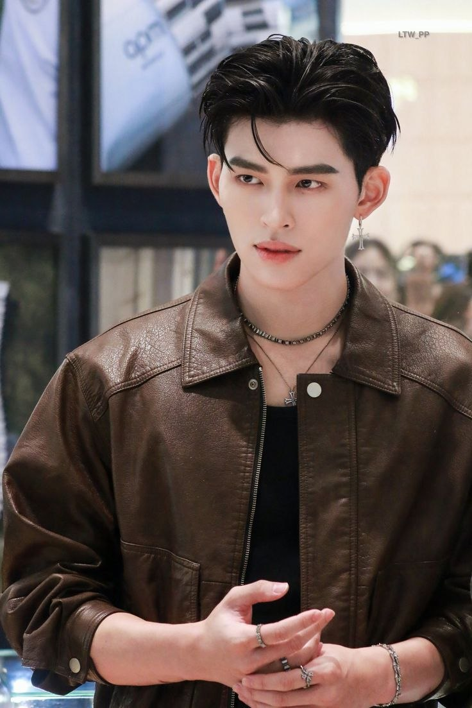

 |
English Name | Naravit Lertratkosum |
|---|---|---|
| Thai Name | ณราวิชญ์ เลิศรัตน์โกสุมภ์ | |
| English Nickname | Pond | |
| Thai Nickname | ปอนด์ | |
| born | 1 February 2001(age 25) (Bangkok, Thailand) | |
| Education | King Mongkut's Institute of Technology Ladkrabang | |
| Occupation Actor | Actor,Singer | |
| Height | 1.85 m (6 ft 1 in) | |
| Years active | 2020–present | |
| Agent | GMMTV | |
| Known for |
Mork in Fish upon the Sky(2020–2021) Palm in Never Let Me Go(2022–2023) Phum in We Are(2024) Day in Leap Day(2025) Thee in Me and Thee(2025) |
Description
Early life and education
Naravit was born on 1 February 2001 in Bangkok, Thailand.He studied Biomedical Engineering at the Faculty of Engineering, King Mongkut's Institute of Technology Ladkrabang. In 2019, during his early college days, Naravit was named the "Most Handsome Man" in the Faculty of Engineering and was a candidate for the "Hot Student" competition of the Ladkrabang Raja Mongkut Institute of Technology.
Career
Naravit Lertratkosum (Thai: ณราวิชญ์ เลิศรัตน์โกสุมภ์; born 1 February 2001), nicknamed Pond (Thai: ปอนด์), is a Thai actor singer. He began his career after winning the Go On Girl & Guy Star Search in 2020, which led to an exclusive contract with GMMTV.He gained widespread recognition for his role as Mork in the 2021 series Fish upon the Sky. In addition to his acting career, Naravit is a member of the Thai boy group JASP.ER, formed by Riser Music. The group debuted on 21 December 2024, with the digital single "Sadistic."
2020–2021:Fish upon the Sky
In 2020, Naravit started his career when he won the third season of Go On Girl & Guy Star Search by Clean & Clear. Following his win, he signed an exclusive contract with GMMTV in the same year. He first appeared on television when he played Non, an extra role in the science fiction series The Gifted: Graduation (2020).His part was aired after each episode, as part of the promotion for Clean & Clear.
In 2021, he took on his first lead role in the Thai comedy series Fish upon the Sky when he played Mork, skyrocketing his career.2022–2023: Never Let Me Go, Our Skyy 2
Naravit starred in the lead role as Palm in Never Let Me Go (2022), a mafia-themed series produced by GMMTV, together with Phuwin Tangsakyuen as his love interest and Wachirawit Ruangwiwat (Chimon) as his love rival.
At the Kazz Awards 2022, Naravit was named "Rising Male Actor of the Year" for his performance in Fish upon the Sky.
In 2023, Naravit played Judo in Dirty Laundry, a mysterious lead in a thrilling money chase, and Khan in Oops! Mr. Superstar Hit on Me, a celebrity entangled in unexpected romance. Pond Naravit reprised his role as Palm in Our Skyy 2, bringing back the beloved chemistry from Never Let Me Go. He also played Alan in Loneliness Society, showcasing a different side of his acting.2024–present: We Are, Leap Day, and Me and Thee
In 2024, Naravit continued to expand his acting career with his lead role in the television series We Are (2024) as Phum. His performances earned him multiple accolades, including the Japan Expo Actors Award, which he received alongside his co-star Phuwin. Additionally, the duo won the Couple of the Year award at the Feed Y Awards 2024.
In 2025, Naravit starred as Day in the Thai mystery thriller series Leap Day. Pond and his on-screen partner Phuwin were also cast as the main leads of the comedy television series Me and Thee (2025). The series gained nationwide recognition due to its many comedic lakorn references and Pond became widely known as his character Thee, a soap opera-loving mafia heir.
Pond got his first voice role in 2026 as Tom Lizard in the Thai dubbed version of the Pixar animation movie Hoppers. In April, Naravit and Phuwin gave their first full radio interview in the United States with Zach Sang.
| Year | Title | Role | Network | Notes |
|---|---|---|---|---|
| 2020 | The Gifted: Graduation | Non | GMM25 | Guest role |
| 2021 | Fish upon the Sky | Mork Suttaya | Main role | |
| 2022 | Oops! Mr. Superstar Hit on Me | Unnamed actor | Guest role | |
| Never Let Me Go | "Palm" Pannakorn Jannaloy | Main role | ||
| 2023 | Dirty Laundry | Judo | Supporting role | |
| Our Skyy 2 | "Palm" Pannakorn Jannaloy | Main role | ||
| Loneliness Society | Alan Sunthornpodjanaruj | Supporting role | ||
| 2024 | We Are | Phum | Main role | |
| 2025 | Leap Day | "Day" Itsara Jittiphat | ||
| Me and Thee | "Thee" Theerakit Kian Lee | |||
| TBA | High & Low: Born to Be High |